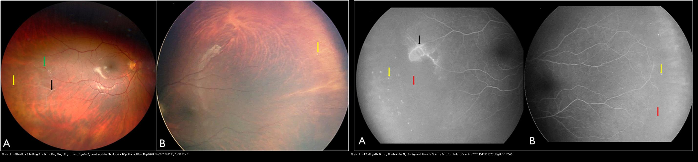
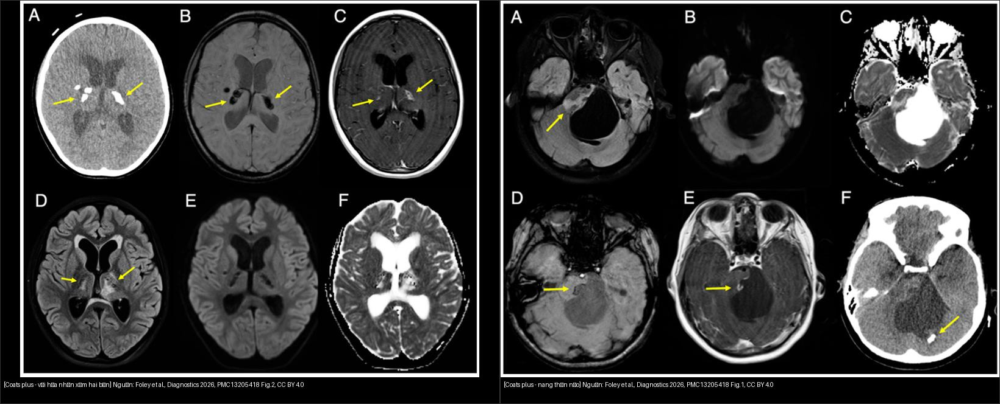
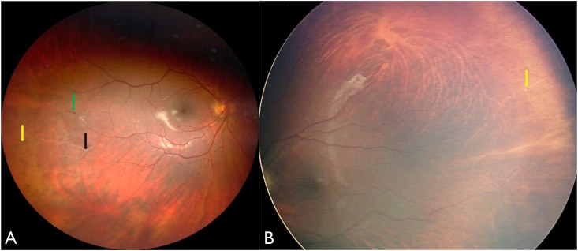
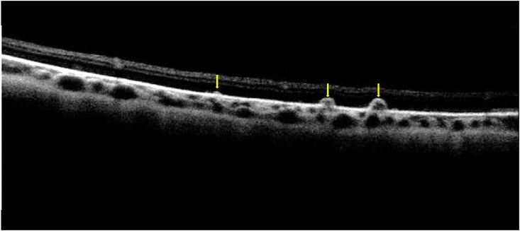
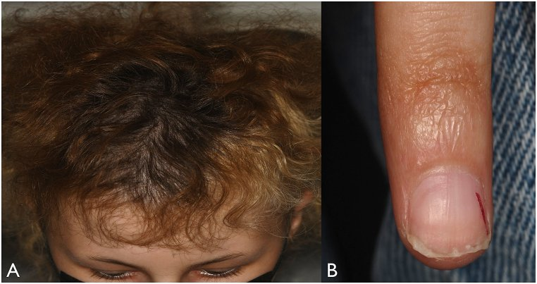
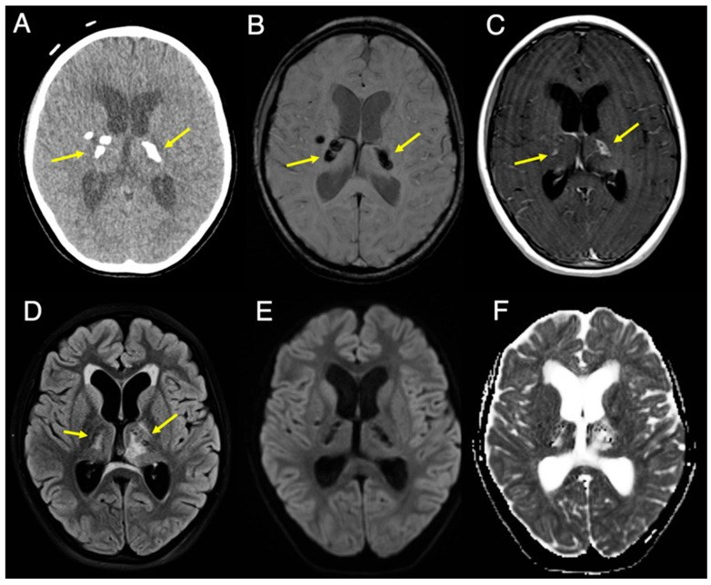
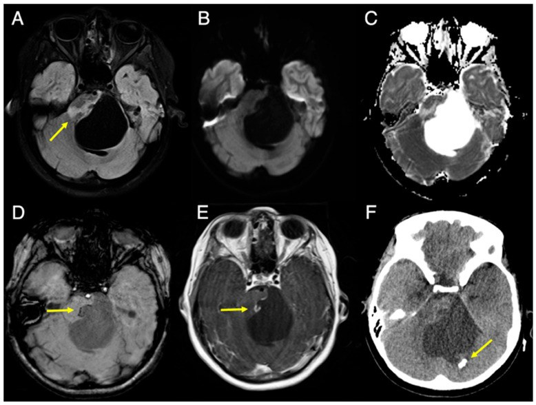
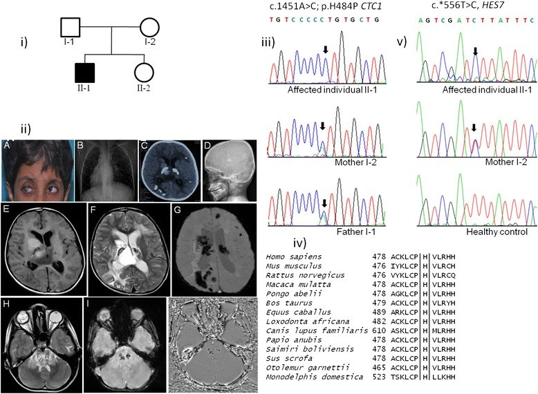
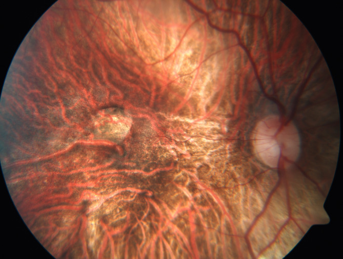

465 — Coats plus syndrome (CTC1/CRMCC): bệnh võng mạc giống Coats hai bên + vôi hóa–nang não & chảy máu tiêu hóa / Coats plus syndrome (cerebroretinal microangiopathy with calcifications and cysts)
Tags: pattern:gia-coats pattern:xuat-tiet-vong-mac pattern:voi-hoa-nao vung:vong-mac vung:nao score:Shields protocol:FA protocol:MRI
Mức chắc chắn (certainty): tổng hợp y văn + ca nguyên văn (literature synthesis + verbatim case) — tổng hợp từ y văn mở (Am J Ophthalmol Case Rep 2022; Diagnostics 2026; BMC Med Genet 2015; BMC Pediatrics 2022; Cureus 2024; Clin Exp Ophthalmol 2025), có gắn hình thái ca nguyên văn.
1. Tổng quan — "Coats hai bên + não + ruột": telomere ngắn gây thoái hóa vi mạch tại nhiều cơ quan
- Định nghĩa (pathology): Coats plus syndrome (CPS) — còn gọi CRMCC (cerebroretinal microangiopathy with calcifications and cysts) — là bệnh di truyền lặn do đột biến hai alen gen CTC1 (conserved telomere maintenance component 1, nhiễm sắc thể 17p13.1), thuộc nhóm rối loạn sinh học telomere (telomere biology disorders — TBD). Đây là thể nặng của dyskeratosis congenita, khác hẳn bệnh Coats kinh điển (tự phát, một bên, không kèm bệnh hệ thống) — bài 457.
- Tam chứng hình ảnh nằm lòng:
- Bệnh võng mạc "giống Coats" HAI BÊN: telangiectasia (giãn mạch) + vô mạch ngoại vi + xuất tiết dưới võng mạc (coats-like exudative retinopathy). Gần như luôn hai bên.
- Vôi hóa nội sọ (đối xứng, nhân xám/thalamus) và nang nhu mô não (điển hình thân não/cầu não).
- Bệnh chất trắng (leukoencephalopathy) — T2/FLAIR tăng tín hiệu. Kèm ngoài thần kinh: chảy máu tiêu hóa do giãn mạch (vascular ectasia), loãng xương/dễ gãy xương, suy tủy xương/thiếu máu bất sản, tóc bạc sớm/loạn dưỡng móng, chậm phát triển, đầu nhỏ, tăng áp lực cửa.
- TẠI SAO ra hình ảnh này (cơ chế):
- Telomere là "đầu bảo vệ" đầu mút NST. Khi CTC1 hỏng, phức hợp CST (CTC1–STN1–TEN1) không bảo vệ được telomere → telomere ngắn dần → tế bào ngừng phân chia/già sớm (senescence) ở các mô sinh sản nhanh (tủy xương, niêm mạc, vi mạch).
- Ở võng mạc: vi mạch ngoại vi thoái hóa → vô mạch ngoại vi → thiếu oxy → VEGF → telangiectasia/phình túi mạch rò huyết tương → xuất tiết lipid và dịch dưới võng mạc. Trên chụp mạch huỳnh quang (FA): vùng vô mạch tối (không ngấm thuốc), telangiectasia rò thuốc sáng muộn, vùng xuất tiết tăng huỳnh quang khuếch tán.
- Ở não: vi mạch não thoái hóa → lắng đọng canxi quanh mạch nhỏ (đối xứng nhân xám) + tăng tính thấm/dịch hóa thành nang (nhất là thân não) + mất myelin do thiếu máu vi mạch → T2/FLAIR tăng tín hiệu chất trắng. Vôi hóa "đen" trên FLAIR/DWI, "sáng" trên CT và nhậy từ tính (blooming) trên SWI.
- Ở tiêu hóa: vi mạch niêm mạc thoái hóa → giãn mạch (angiodysplasia/ectasia) ruột non, dạ dày, gan → chảy máu nặng/tái phát, tăng áp lực cửa.
- Ngưỡng & số liệu định lượng (từ nguồn làm chuẩn):
- Gen: CTC1 ở 17p13.1; > 20 đột biến lặn đã mô tả; kiểu compound heterozygous điển hình (một đột biến protein-truncating + một missense); Anderson mô tả 10 gia đình CPS đầu tiên.
- Tuổi khởi phát rất sớm: bệnh võng mạc có thể xuất hiện từ 18 tháng tuổi (Netravathi, ca bé trai 8 tuổi); nang não lớn có thể gây triệu chứng lúc 9 tuổi (nang 4,9 × 5,0 cm ở cầu não gây úng thủy tắc nghẽn); ca 15 tuổi (Shields) được chẩn đoán sau nhiều gãy xương tự phát.
- Độ dài telomere có thể đo bằng Southern/qPCR–flow-FISH; ca Netravathi: bố mẹ 10 kb vs bệnh nhân 8 kb. Tuy nhiên telomere có thể còn bình thường trên xét nghiệm (ca Shields) → không loại trừ CPS dựa vào độ dài telomere.
- Đe dọa tính mạng: chảy máu tiêu hóa (Hb tụt còn 6,5 g/dL, phải truyền hồng cầu mỗi 2–3 tuần) và tăng áp lực cửa; nguy cơ ung thư (AML, lymphoma, ung thư biểu mô đầu–cổ, da).
2. Mẫu hình + chẩn đoán phân biệt theo bệnh cảnh (Gamut)
- Mẫu hình cửa vào: trẻ nhũ nhi–thiếu niên có bệnh võng mạc giống Coats HAI BÊN hoặc một bên rõ + bên kia chỉ thấy trên FA, kèm một trong các dấu hiệu hệ thống: cân nặng/chiều cao < bách phân vị 3, đầu nhỏ, tóc bạc sớm, loạn dưỡng móng, gãy xương tự phát, thiếu máu/xuất huyết tiêu hóa, co giật, yếu nửa người.
- Gamut theo thứ tự phải loại trừ:
- Khối u (loại trừ TRƯỚC): retinoblastoma (vôi hóa thô, < 5 tuổi) — bài 412; và u/nang não (nang CPS có thể giả u thân não → đừng mổ cắt "u" — bài 213).
- Cùng phổ TBD: Revesz syndrome (TINF2, trội — bệnh võng mạc xuất tiết hai bên + canxi hóa nội sọ + thiếu máu bất sản + thiểu sản tiểu não), dyskeratosis congenita (bộ ba móng–da–niêm mạc miệng), Hoyeraal–Hreidarsson (suy tủy + thiểu sản tiểu não + suy giảm miễn dịch), Labrune/LCC (bệnh chất trắng + canxi hóa + nang, không bệnh võng mạc).
- Bệnh mạch võng mạc di truyền khác: FEVR, Norrie, incontinentia pigmenti (do Norrin/β-catenin, thường vô mạch + tân mạch co kéo hơn là xuất tiết); Coats disease kinh điển (một bên); Leber miliary aneurysms.
- Khác: bệnh võng mạc do bệnh hệ thống (lupus/Behçet — bài 455), bệnh võng mạc do xạ, viêm nội nhãn giả u.
- Mnemonic "Coats-plus 3C–BGH": Coats-like HAI BÊN · Calcium (vôi hóa nhân xám đối xứng) · Cyst (nang thân não) · Bone (loãng xương/gãy xương) · GI bleeding (giãn mạch ruột) · Hair/nail (lão hóa sớm).

Trái: đáy mắt — mạch võng mạc xơ (mũi tên đen), telangiectasia (mũi tên xanh), lắng đọng dạng drusen (mũi tên vàng). Phải: FA — vô mạch ngoại vi rộng (mũi tên đỏ), rò nhẹ dọc mạch thái dương, chấm ngấm ở các nốt dạng drusen. Nguồn: Agrawal, Kalafatis & Shields, Am J Ophthalmol Case Rep 2022, PMC9513731 Fig. 1 & 3, CC BY 4.0; ảnh ghép letterbox, giữ nguyên bản.3. Bảng so sánh phân biệt (ma trận đối chiếu)
| Thực thể (entity) | Hình ảnh điển hình | Chốt vào (rule-in) | Chốt loại (rule-out) | Gợi ý xác nhận |
|---|---|---|---|---|
| Coats plus (CTC1, CRMCC) | Võng mạc giống Coats HAI BÊN (telangiectasia + vô mạch ngoại vi + xuất tiết) + vôi hóa nhân xám + nang thân não + bệnh chất trắng | Coats-like hai bên (FA) + vôi hóa/nang não + (loãng xương / gãy xương / chảy máu tiêu hóa / tóc–móng bất thường) | Bệnh võng mạc một bên + không dấu hệ thống → Coats disease | Gen CTC1 (biallelic, 17p13.1); MRI/CT não; nội soi tiêu hóa khi thiếu máu; DEXA; CBC |
| Bệnh Coats (kinh điển) | Một bên, nam, giãn mạch-teo mao mạch + xuất tiết lipid, không dấu thần kinh/tiêu hóa | Bé nam + một bên + xuất tiết lipid + không bệnh hệ thống | Hai bên / kèm vôi hóa–nang não → Coats plus | FA góc rộng; loại trừ retinoblastoma trước can thiệp |
| Revesz (TINF2, trội) | Bệnh võng mạc xuất tiết hai bên + canxi hóa nội sọ + thiểu sản tiểu não, thiếu máu bất sản | Xuất tiết hai bên + canxi hóa nội sọ + thiếu máu bất sản (không loãng xương/chảy máu ruột) | Có loãng xương + chảy máu tiêu hóa → Coats plus | Gen TINF2 (di truyền trội) vs CTC1 (lặn) |
| Dyskeratosis congenita | Bộ ba loạn dưỡng móng + tăng sắc tố lưới da + bạch sản niêm mạc miệng; võng mạc có thể vô mạch ngoại vi | Bộ ba móng–da–niêm mạc + suy tủy | Coats-like hai bên + vôi hóa/nang não → Coats plus | Panel gen TBD (DKC1/TERC/TERT/RTEL1/CTC1/TINF2), độ dài telomere |
| FEVR / Norrie / IP | Vô mạch ngoại vi + tân mạch co kéo, hai bên, tiền sử gia đình; Norrie kèm điếc/chậm phát triển | Vô mạch + tân mạch co kéo + gia đình | Xuất tiết lipid nhiều + bất thường não/xương → Coats plus | FA + gen (FZD4/LRP5/NDP/IKBKG) + tầm soát gia đình |
| Retinoblastoma (loại trừ TRƯỚC) | Khối đặc + vôi hóa THÔ, < 5 tuổi, leukocoria | Vôi hóa trong khối ở trẻ nhỏ = RB tới khi loại trừ | Không khối đặc + vô mạch/xuất tiết → Coats plus | MRI sọ–hốc mắt (tránh CT) + hội chẩn ung thư nhi |

Trái: CT + MRI — vôi hóa thô đối xứng vùng nhân xám (chủ yếu thalamus), ngấm viền nhẹ, đen trên FLAIR/DWI và sáng trên SWI. Phải: nang lớn ở cầu não (4,9 × 5,0 cm) gây hiệu ứng khối, dịch trong nang bị triệt trên FLAIR. Cùng một bệnh, hai dấu hiệu chốt của tam chứng hình ảnh. Nguồn: Foley et al., Diagnostics 2026, PMC13205418 Fig. 1–2, CC BY 4.0; ảnh ghép letterbox, giữ nguyên bản.4. Protocol chụp + hệ phân độ/điểm chuẩn hóa
- Mắt (bắt buộc hai mắt):
- Soi đáy mắt giãn đồng tử + đè củng mạc tới ora serrata.
- FA góc rộng (WFFA) HAI MẮT — tiêu chuẩn vàng: một mắt có thể trông bình thường trên ảnh màu nhưng vẫn có vô mạch ngoại vi trên FA (đây chính là chìa khóa chẩn đoán CPS). Thường làm dưới gây mê (EUA) ở nhũ nhi.
- OCT (phù hoàng điểm, bong biểu mô sắc tố dạng drusen) và siêu âm B-scan khi môi trường đục (bài 411).
- Não: MRI 3T (T2/FLAIR fat-sat, DWI/ADC, SWI tìm vôi hóa/vi xuất huyết, T1 sau tiêm) + CT não (cửa sổ xương/não) khi cần xác nhận vôi hóa (SWI "blooming" gợi ý, CT khẳng định). Nang thân não: theo dõi kích thước, hiệu ứng khối, úng thủy.
- Tầm soát hệ thống (đa cơ quan): CBC + tủy xương (suy tủy), nội soi tiêu hóa (giãn mạch — nội soi trên/dưới thường âm → có thể cần nội soi ruột non), men gan + siêu âm/Doppler cửa (tăng áp lực cửa), DEXA (loãng xương), chức năng phổi (xơ phổi), khám da/tóc/móng.
- Gen & di truyền: giải trình tự gen CTC1 (panel TBD), tư vấn di truyền lặn, nguy cơ tái phát 25% cho anh chị em; tầm soát người thân. Đo độ dài telomere (qPCR/flow-FISH/Southern; bình thường không loại trừ).
- Phân độ bệnh võng mạc — Shields (áp cho bệnh võng mạc Coats-like): 1 giãn mạch-teo mao mạch đơn thuần; 2 kèm xuất tiết (2A ngoài hoàng điểm / 2B tới hoàng điểm); 3 bong võng mạc xuất tiết (3A bán phần / 3B toàn bộ); 4 bong toàn bộ + glaucoma; 5 giai đoạn cuối (mắt mù đau). Xử trí theo giai đoạn: 1 theo dõi; 2–3 laser quang đông/cryo vùng telangiectasia ± vô mạch (± anti-VEGF, corticoid); 3–5 phẫu thuật dẫn lưu bong xuất tiết; glaucoma/phthisis → cân nhắc cắt bỏ nhãn cầu kiểm soát đau.
- Nguyên tắc điều trị toàn thân: đa chuyên khoa (mắt + huyết học + tiêu hóa + thần kinh); tránh bức xạ ion hóa lặp lại và tránh hóa–xạ trị gây tổn thương DNA (tế bào đã nhạy cảm do telomere ngắn) — ưu tiên kỹ thuật không bức xạ khi có thể.
flowchart TD
A[Trẻ có bệnh võng mạc xuất tiết / leukocoria HOẶC bất thường thần kinh - xương - tiêu hóa] --> B{Loại trừ khối u trước}
B -->|Khối đặc + vôi hóa thô, < 5 tuổi| C[RETINOBLASTOMA - MRI + hội chẩn ung thư nhi]
B -->|Không| D[Soi đáy mắt + FA GÓC RỘNG HAI MẮT]
D --> E{Vô mạch ngoại vi + telangiectasia hai bên?}
E -->|Không, một bên| F[Bệnh Coats kinh điển - phân độ Shields]
E -->|Có, hai bên| G[MRI/CT não: tìm vôi hóa nhân xám + nang + bệnh chất trắng]
G --> H{Có vôi hóa/nang não hoặc dấu hệ thống?}
H -->|Không| I[FEVR / Norrie / IP / Revesz - xét gen + tầm soát gia đình]
H -->|Có: loãng xương, chảy máu tiêu hóa, tóc-móng| J["COATS PLUS (CRMCC) - gen CTC1"]
J --> K[Laser/cryo vùng telangiectasia; tầm soát tủy xương, tiêu hóa, xương, phổi]
K --> L[Tư vấn di truyền lặn - nguy cơ 25% - tầm soát anh chị em]
5. Biến thể bình thường và cạm bẫy
- Cạm bẫy số 1 — "Coats là một bên nên loại Coats plus": Coats plus gần như luôn hai bên, nhưng có thể không đối xứng và mắt "lành" chỉ lộ vô mạch trên FA. → Luôn FA hai mắt, đừng kết luận CPS/loại CPS bằng soi đáy mắt đơn thuần.
- Cạm bẫy số 2 — não bình thường không loại trừ: ca Shields có MRI não bình thường và telomere bình thường nhưng vẫn xác nhận CPS bằng gen. Bệnh tiến triển theo thời gian (ca Han: thiếu máu + Coats lúc 9 tháng, gen dương lúc 7 tuổi) → theo dõi định kỳ, đừng "chốt lành".
- Cạm bẫy số 3 — nang não giả u: nang CPS (thân não) có thể gây hiệu ứng khối + úng thủy như u thân não → ca 9 tuổi bị mổ vì tưởng u, mô bệnh chỉ thấy chất đạm vô bào, không tế bào u. Nhận diện vôi hóa nhân xám đối xứng cùng lúc để tránh mổ cắt "u".
- Cạm bẫy số 4 — chảy máu tiêu hóa "nội soi âm": nội soi dạ dày–đại tràng thường chỉ thấy viêm nhẹ, trong khi nguồn chảy máu là giãn mạch ruột non → cần nội soi ruột non/laparoscopy-assisted; chảy máu tái phát nguy hiểm tính mạng.
- Cạm bẫy số 5 — bức xạ: bệnh nhân TBD nhạy cảm với tổn thương DNA → hạn chế CT lặp lại, cân nhắc MRI/SWI thay thế; đồng thời loại trừ retinoblastoma trước mọi can thiệp mắt.
- Cạm bẫy số 6 — nhầm Labrune/LCC và Revesz: LCC không có bệnh võng mạc; Revesz là trội (TINF2) và không có loãng xương/chảy máu ruột đặc trưng của CPS.
6. Tự lượng giá — Blind Quiz
Ca 1 — Bé gái 15 tuổi, thấp lùn, đầu nhỏ, tóc bạc sớm, tiền sử gãy xương tự phát nhiều lần. Soi đáy mắt hai bên:



- Hỏi: dấu đáy mắt? OCT xác nhận gì? Vì sao phải chụp FA cả hai mắt? Chẩn đoán và bước xác nhận?
Bấm để hiện đáp án (findings + chẩn đoán)
- Dấu hiệu (findings): mắt phải mạch võng mạc xơ, telangiectasia, xuất tiết nhẹ dưới vùng giãn mạch, nốt lắng đọng dạng drusen ở ngoại vi hai mắt; FA cho vô mạch ngoại vi hai bên + rò nhẹ dọc mạch thái dương + chấm ngấm ở nốt drusen.
- Chẩn đoán (diagnosis): Coats plus syndrome — bệnh võng mạc giống Coats hai bên. Dấu hệ thống (thấp lùn, đầu nhỏ, tóc bạc sớm, gãy xương tự phát) là chìa khóa phân biệt với bệnh Coats một bên. Xác nhận: gen CTC1 (biallelic) — ca này còn có bong biểu mô sắc tố dạng drusen hai bên (một quan sát mới, do RPE "già" bởi telomere hỏng).
- Phản biện: ca này MRI não bình thường và telomere bình thường — nghĩa là không có dấu não/telomere không loại trừ CPS; chẩn đoán dựa vào hình thái mắt hai bên + gen.
- Nguồn ảnh: Agrawal, Kalafatis & Shields, Am J Ophthalmol Case Rep 2022, PMC9513731 Fig. 1–2, CC BY 4.0.
Ca 2 — Bé gái 9 tuổi, 3 tháng mất thăng bằng + mờ mắt trái; CT/MRI não:

- Hỏi: hai dấu não nằm lòng là gì? Vì sao ban đầu dễ bị coi là "u thân não"?
Bấm để hiện đáp án (findings + chẩn đoán)
- Dấu hiệu (findings): vôi hóa thô đối xứng vùng nhân xám (chủ yếu thalamus), đen trên FLAIR/DWI, sáng trên SWI, ngấm viền nhẹ; kèm nang 4,9 × 5,0 cm ở cầu não gây hiệu ứng khối + úng thủy tắc nghẽn.
- Chẩn đoán (diagnosis): Coats plus (CRMCC) — tam chứng vôi hóa nội sọ + nang nhu mô não + bệnh chất trắng. Ban đầu dễ nhầm u thân não vì nang lớn gây hiệu ứng khối; ca này chẩn đoán muộn 5 năm cho tới khi em trai được phát hiện bệnh Coats → gợi ý nguyên nhân di truyền. Mô bệnh nang chỉ chất đạm vô bào, không có tế bào u.
- Phản biện: bệnh nhân đã được mổ vì tưởng u — bài học: khi có vôi hóa nhân xám đối xứng, nghĩ ngay CRMCC/Coats plus trước khi mổ.
- Nguồn ảnh: Foley et al., Diagnostics 2026, PMC13205418 Fig. 2, CC BY 4.0.
Ca 3 — Bé gái 6 tuổi, xuất huyết tiêu hóa nặng, gan lách không to nhưng Doppler cửa gợi ý tăng áp lực cửa; ảnh MRI sọ:

Ảnh bổ sung — kiểu hình đa hệ thống của một gia đình Coats plus (phả hệ, tóc bạc sớm + đục giác mạc + leukocoria, X-quang tim lệch phải, CT vôi hóa não, đo telomere):

- Hỏi: nguyên nhân chảy máu tiêu hóa ở trẻ này là gì? Liên hệ với bệnh võng mạc hai bên ra sao? Bất thường não và telomere nói lên điều gì?
Bấm để hiện đáp án (findings + chẩn đoán)
- Dấu hiệu (findings): nang nhu mô não (điển hình thân não) + vôi hóa não trên hình ảnh sọ; lâm sàng: cân nặng/chiều cao < bách phân vị 3, Hb 6,5 g/dL, Hct 21%, giảm bạch cầu (WBC 2010/mm³), GGT 245 U/L; nội soi thấy hình thái mạch máu cuộn (vascular ectasia).
- Chẩn đoán (diagnosis): Coats plus — chảy máu tiêu hóa và tăng áp lực cửa do giãn mạch/thoái hóa vi mạch ở ruột–gan, cùng cơ chế telomere hỏng với bệnh võng mạc giống Coats. Đa hệ thống: suy tủy/thiếu máu bất sản + vôi hóa/nang não + bệnh võng mạc hai bên + loãng xương.
- Nguồn ảnh: Foley et al., Diagnostics 2026, PMC13205418 Fig. 1, CC BY 4.0; số liệu lâm sàng: Bozkurt et al., BMC Pediatrics 2022 (PMC8903628), CC BY 4.0; ảnh bổ sung: Netravathi et al., BMC Med Genet 2015, PMC4422476 Fig. 1 (phả hệ; tóc bạc sớm + đục giác mạc + leukocoria; X-quang tim lệch phải; CT vôi hóa hai bên thalamus; biến dạng xương), CC BY 4.0.
Ca 4 — FA góc rộng một mắt ở bệnh nhân mang đột biến CTC1 gây bệnh:

- Hỏi: mô tả bất thường trên FA? Vì sao FA là "chốt" chứ không phải ảnh đáy mắt màu?
Bấm để hiện đáp án (findings + chẩn đoán)
- Dấu hiệu (findings): vùng vô mạch ngoại vi (non-perfusion) + mạch telangiectasia rò thuốc — mẫu hình kinh điển của bệnh võng mạc Coats-like.
- Chẩn đoán (diagnosis): bệnh võng mạc do Coats plus (đột biến CTC1). FA nhạy hơn ảnh màu/soi đáy mắt: mắt có thể trông bình thường nhưng vẫn vô mạch trên FA → bắt buộc FA hai mắt để phát hiện tổn thương dưới lâm sàng và định hướng CPS.
- Phản biện: cùng mẫu hình FA với bệnh Coats kinh điển — phân biệt nhờ hai bên + dấu hệ thống (não, xương, tiêu hóa).
- Nguồn ảnh: Ghoraba, Sears & Traboulsi, Clin Ophthalmol 2024, PMC11962705 Fig. 5, CC BY-NC-ND 4.0 (giữ nguyên bản, không ghép/crop).
Ca 5 — Hai đáy mắt ở hai trẻ khác nhau: gọi tên cơ chế mỗi bên và nêu cách xác nhận khác nhau:
- Hỏi: bên nào cho thấy xuất tiết/telangiectasia? Bên nào cho thấy vô mạch ngoại vi? Một mình ảnh màu có đủ không?
Bấm để hiện đáp án (findings + chẩn đoán)
- Trái = ảnh đáy mắt màu: mạch xơ, telangiectasia, lắng đọng dạng drusen — dấu của rò huyết tương/xuất tiết.
- Phải = FA: vô mạch ngoại vi hai bên — dấu của thoái hóa vi mạch; thường không thấy đủ trên ảnh màu.
- Chốt: chỉ ảnh màu không đủ để chẩn đoán/loại trừ CPS → cần FA góc rộng hai mắt; kết hợp hình ảnh não (vôi hóa/nang) và gen CTC1 để chốt.
- Nguồn: Agrawal, Kalafatis & Shields, Am J Ophthalmol Case Rep 2022 (PMC9513731) Fig. 1 & 3, CC BY 4.0.
Bài liên quan chéo
- 400 – Tổng quan Mắt & thị giác (bảng DDx mắt)
- 457 – Bệnh "giả ROP" ở trẻ đủ tháng: FEVR, Norrie, incontinentia pigmenti & Coats (Coats/Coats-like, phân biệt)
- 412 – U trong nhãn cầu (retinoblastoma) (loại trừ TRƯỚC)
- 450 – Mắt nhi: ROP, Coats, PHPV
- 437 – Teo thị kèm điếc (bệnh ty thể/di truyền) (nhóm bệnh di truyền–đa cơ quan)
- 213 – U não (nang thân não giả u)
- 155 – U thượng thận tình cờ (đối chiếu nhóm bệnh nội tiết–di truyền đa cơ quan)
Ảnh
- Tên file:
465_coats-plus_<dấu hiệu>_<Modality>_PMC*-Fig*-CCBY*.jpg; nguồn + giấy phép từng ảnh trongimages/CREDITS.md. - Ảnh CC BY-NC-ND (PMC11962705) giữ nguyên bản — không ghép/crop. Ảnh ghép chỉ dùng nguồn CC BY (letterbox, giữ nguyên bản).
- AuntMinnie (Case of the Day): chỉ dẫn link, không tải (xem
sources.md).
Không dùng để chẩn đoán độc lập khi chưa có người hướng dẫn.